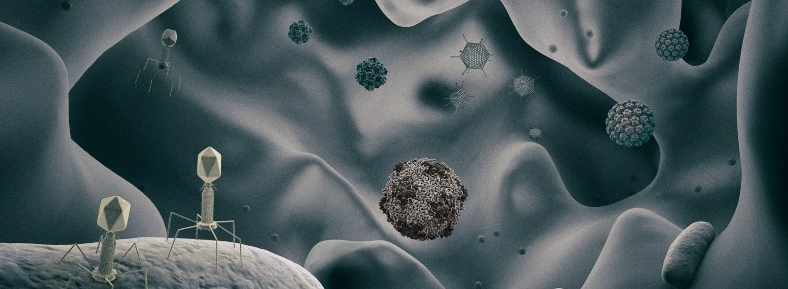

The research in the Luque Lab includes theoretical and computational biophysics as well as mathematical modeling. The aspiration of the lab is to understand the impact of the molecular and physicochemical properties of viruses in viral ecology, ultimately guiding the development of biomedical applications. Our goal aligns with the research of our collaborators in the Viral Information Institute at San Diego State University.
Viruses infect all organisms and have a tremendous impact in our world. In one hand, they are a constant threat for humans, crops, and livestock, having obvious repercussions in public health and the economy. On the other hand, they regulate ecosystems, represent an alternative to antibiotics, and provide a platform for multiple biomedical and nanotechnological applications. The study of viruses is as timely as fascinating.
Viruses are biological entities made of two essential components: the infectious genetic material and the protective protein shell called capsid. Viral particles lack a metabolism and require a host cell to replicate, relying on basic chemical and physical mechanisms to succeed in their life cycle. When infecting a cell, for instance, they can deliver the genetic material by disassembling the capsid or injecting it using internal pressure. The analysis of these mechanisms is stimulating the emergence of the interdisciplinary field of Physical Virology. However, the integration of theoretical, computational, and experimental methods is still in the first stage, and a solid framework does not yet relate the physicochemical, genetic, and ecological properties of viruses.
The assembly of capsids is crucial in the life cycle of viruses. Experiments can monitor capsid formation, but require theories and simulations to interpret the results, and, for most viruses, the conditions of assembly remain largely unknown. All-atom simulations could tackle this problem, but they are still too demanding to capture capsid formation. As an alternative, in the Luque Lab, we aim to combine classical nucleation theory and a new sophisticated coarse-grained methodology to reproduce de novo the assembly of specific viruses. Our effort currently focuses on tailed bacteriophages, which are the most abundant type of virus in the planet and are crucial in the regulation of ecosystems.
The human body is a vast ecosystem of microorganisms that contains ten bacteria per human cell. Bacteria impact the nutrition, behavior, and health of the human host, and variations on their composition correlates, for instance, with Crohn’s disease, obesity, and diabetes. Bacteriophages (or phages) are viruses that infect bacteria and are present in our body in even larger quantities, thousand phages per human cell. By interacting with bacteria, phages could be impacting the human host alike, but their role in the microbiota remains largely unexplored. In the Luque Lab we aim to develop a multiscale approach combining mathematical modeling, cellular automata, and metagenomics to investigate the possible stabilizing role of bacteriophages in the human microbiome.